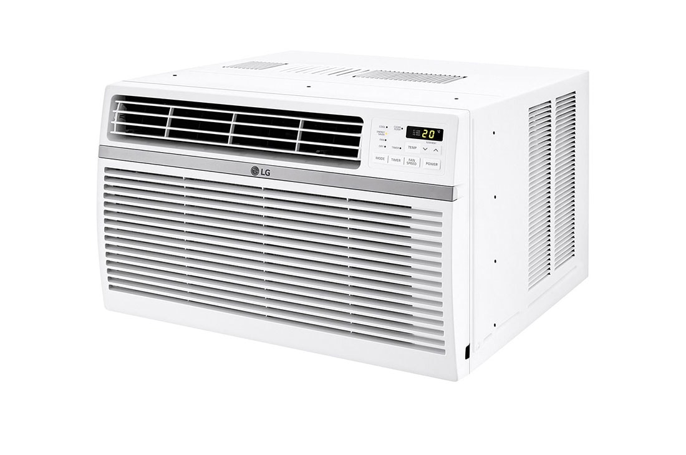

REFRIGERACIÓN A DOMICILIO
Servicio técnico, mantenimiento e instalación de aires acondicionados, de ventana y split. Neveras, refrigeradores y congeladores.
Contamos con el mejor equipo especializado, los mejores equipos y herramientas a su disposición
Excelentes precios
